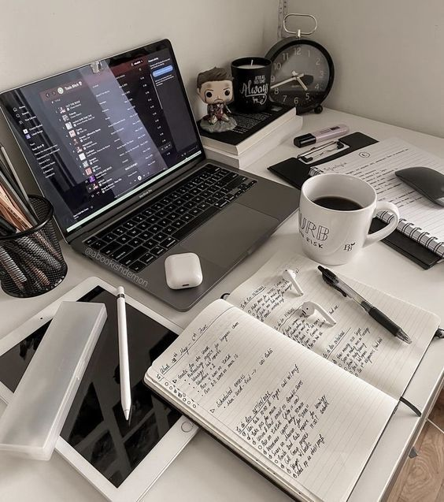
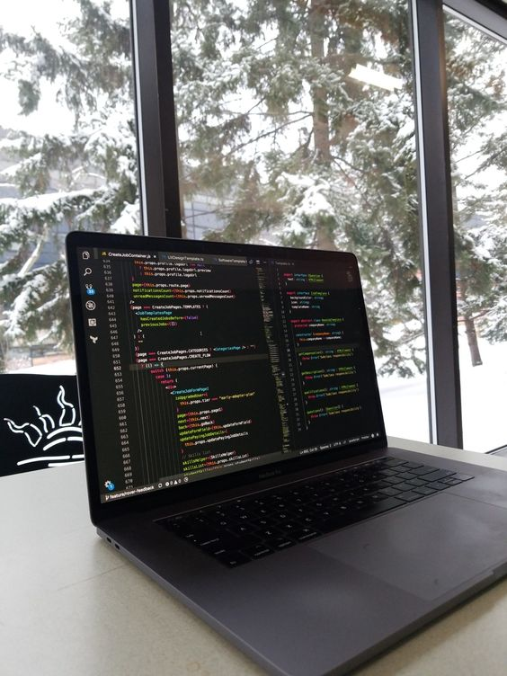

A
Home
Projetos
Olá
eu sou Alice Vitória
eu sou Alice Vitória
Tenho 17 anos e sou desenvolvedora Full Stack com experiência profissional de 9 meses
Projetos
Ver mais

...
HTML e CSS

...
Python

...
JAVA